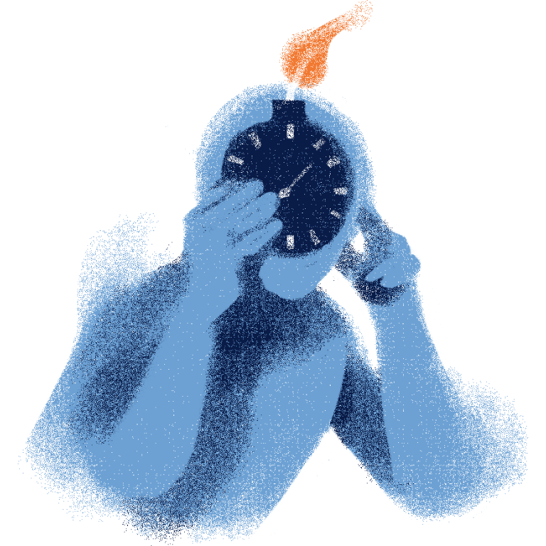
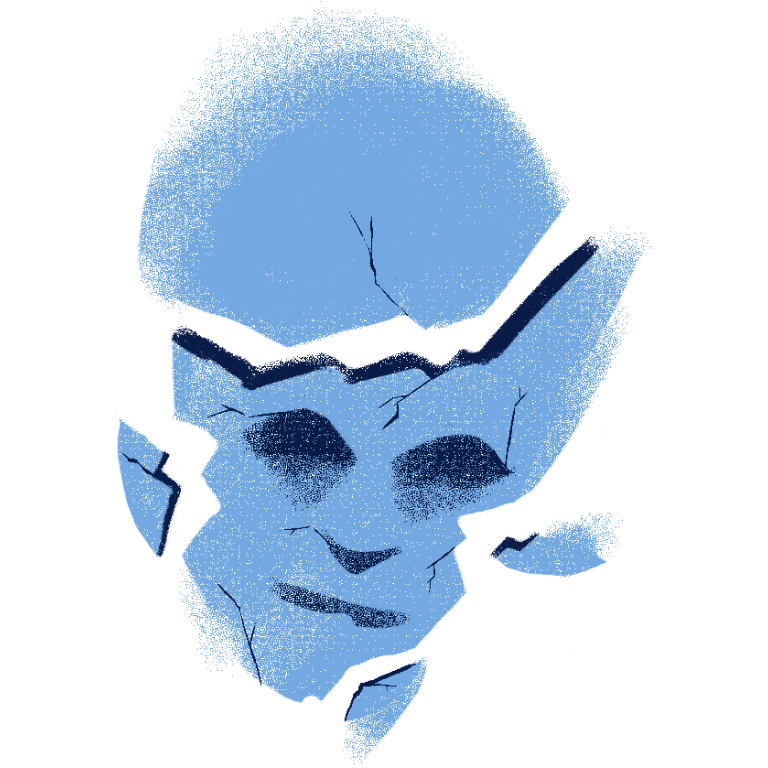

STRESS
When so many things and noise are thrown at you, when responsibilities start to pile up, when people start to not recognize your efforts, or when so much pressure has been put upon you, what is your initial response, and how does it affect your behavior and emotions right after?
We all deal with stress differently. Life can be full of obstacles, challenges, and hardships that no one can simply ignore. Facing it head on can feel empowering and enlightening, but when it all becomes too much, your mind starts to crumble, you get tired, and you struggle to process even the simplest of tasks.
The reason we react to such threats is to protect ourselves from any more danger. This is stress, and it is natural for us to cope or feel overwhelmed when things get rough. Remember, what makes us who we are is how we react in the present, so if you fear you've made some mistakes in the past regarding stress, it is important to move forward and learn from the experience.
Stress, Flight or Fight?
Stress can be caused by different life events that challenge us to a point of little to no control. Our body's response is to produce stress hormones that trigger a fight or flight response. Stress is our body's way of protecting ourselves from those that threaten or endanger us.
Not all stress comes from negative changes because even positive life changes can make a person stressed. Sometimes it can be difficult to understand why we are stressed, which is why in some cases, people tend to push others away first, even if they have nothing to do with the stressor. It is often difficult to reach out due to stress because in the midst of it, people's minds can be filled with anxiety, anger, and confusion. Some choose to brush off the stress and distract themselves, while others continue to persist.
Stress makes you feel:
- Difficulty concentrating
- Headaches or body pains
- Sleeping troubles
- Loss of appetite
- Anxiety
- Depression
- Burnout
- Irritable
- Fear
- Anger or frustration
It's Okay to Not Be Okay
Every once in a while, it's important to take a break from what stresses you. Take a walk, exercise, perform your hobbies, talk to your friends, or do anything that you want to do just to clear your mind so that you can get back to the problem with a clear mind.
Occasionally, it is difficult to admit that you are not fine. Our dignity forces us to show others a stronger sense of self and to prevent them from seeing a weaker version of us. But this version never was meant to be a weaker version of ourselves but a true and natural one. Everyone gets tired every now and then; no one will and should judge you for prioritizing yourself first. It is important to go through life like we are truly living it, not just to survive through difficulties.
Don't push yourself too much until you are helpless.

Being stressed can make you confused. Take a break and breathe.

When it is all too much, never be afraid to be honest to the people who doesn't stress you out